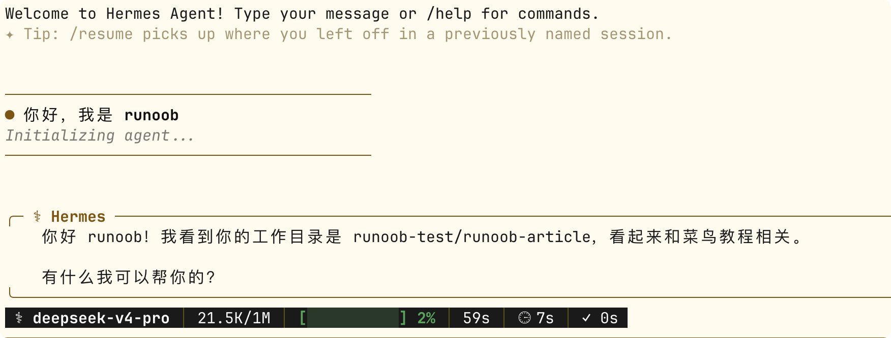

Hermes Agent CLI 命令行
CLI（命令行界面）是 Hermes Agent 最原生的交互方式，也是功能最完整的使用入口。
本章将系统介绍 CLI 的三种运行模式、会话管理、斜杠命令、TUI 界面、快捷操作以及脚本化使用技巧。
三种运行模式
Hermes CLI 提供三种运行模式，从简单问答到交互式会话再到纯键盘操作，覆盖不同使用场景。
模式一：交互式会话（hermes chat）
这是最常用的模式——启动一个持续的多轮对话会话。
启动交互式会话（使用默认 Profile）：
hermes chat
启动后进入对话界面，提示符变为，输入消息后按 Enter 发送，Agent 开始回复:

进入交互式会话后，你可以连续发送多条消息，Agent 会记住前面的对话上下文。
这是日常开发中最自然的使用方式——就像和一个同事在 Slack 上聊天一样。
模式二：一次性查询（-q / --query）
不需要进入交互式会话，直接传入问题并获得回复，适合脚本化和快速查询。
实例
hermes chat -q "用 Python 写一个快速排序函数"
# 结合 Profile 使用
coder chat -q "审查 src/main.py 的代码风格"
# 在 Shell 脚本中使用
hermes chat -q "将以下日志中的错误行提取出来" < error.log
-q模式的关键特性：
- 非交互式，Agent 回复完成后立即退出
- 返回标准的退出码，可以在脚本中判断成功或失败
- 支持管道和重定向
模式三：TUI 终端界面（hermes --tui）
TUI（Terminal User Interface）提供纯键盘操作的全屏终端界面。
实例
hermes --tui
# TUI 模式下：
# 上下箭头：浏览对话历史
# Ctrl+N：新建会话
# Ctrl+S：切换侧边栏（文件、工具历史等）
# Ctrl+C：中断 Agent 当前操作
# / 开头：输入斜杠命令
TUI 模式的独特优势：
- 侧边栏可以同时查看对话、文件变更、工具调用历史
- 纯键盘操作，不依赖鼠标
- 适合长时间深度工作场景
三种模式对比
| 模式 | 命令 | 交互方式 | 适合场景 |
|---|---|---|---|
| 交互式会话 | hermes chat | 多轮对话，输入消息后等待回复 | 日常开发、复杂任务 |
| 一次性查询 | hermes chat -q "..." | 单次提问，回复后退出 | 脚本化、快速查询 |
| TUI | hermes --tui | 全屏键盘操作，多面板 | 深度工作、文件操作密集 |
会话管理
会话（Session）是 CLI 中对话的基本单位。每个会话拥有独立的上下文、Token 计数和会话 ID。
继续与恢复会话
实例
hermes --continue
hermes chat --continue
# 按会话标题恢复（前提是已用 /title 命名过）
hermes -c "重构认证模块"
# 按会话 ID 精确恢复
hermes -r 20260305_091234_abc12345
恢复会话时，Agent 保留完整的对话上下文，包括之前的工具调用记录和 LLM 推理历史。
开启新会话
实例
/new
# 或
/reset
# 效果相同：结束当前会话，开启新会话，
# Agent 会重新加载系统提示词和持久记忆
新会话不保留之前的对话上下文，但持久记忆（MEMORY.md 和 USER.md）仍然可见。
会话标题管理
Hermes 会在第一轮对话后自动生成会话标题，你也可以手动命名：
实例
/title 数据库迁移方案讨论
# 查看当前会话信息（ID、标题、Token 用量等）
/status
上下文压缩
当对话历史过长、接近上下文窗口上限时，可以手动触发压缩：
实例
/compress
# 压缩后，旧内容被摘要化以释放空间，
# 新消息可以继续发送。
# 压缩后的会话创建自动世系（Auto-Lineage）：
# "数据库迁移" → "数据库迁移 #2"
自动压缩由 Hermes 在上下文接近上限时自动触发。/compress 只是让你可以手动提前触发。两者效果相同。
常用斜杠命令
在交互式会话和 TUI 模式中，以/开头的输入被识别为斜杠命令。
以下是 CLI 中最常用的命令，按功能分组。
会话控制
| 命令 | 功能 |
|---|---|
| /new 或 /reset | 开启新会话 |
| /title <名称> | 设置当前会话标题 |
| /status | 显示会话 ID、标题、Token 用量 |
| /usage | 显示本次会话 Token 消耗详情 |
| /compress | 手动压缩对话上下文 |
| /resume [标题] | 恢复之前命名的会话 |
任务控制
| 命令 | 功能 |
|---|---|
| /stop | 中断 Agent 当前正在执行的任务 |
| /retry | 让 Agent 重新生成上一次回复 |
| /undo | 撤销上一轮对话（移除最后一组问答） |
| /background <任务> | 在后台会话中异步运行任务 |
/undo 是对话级别的撤销——它会从会话历史中删除最后一轮问答，Agent 的上下文回到上一次回复之前的状态。这不同于 /retry（保留原问答，让 Agent 重新回答）。
模型与配置
| 命令 | 功能 |
|---|---|
| /model | 查看当前使用的模型 |
| /model <名称> | 切换到指定模型 |
| /model list | 列出所有可用模型 |
| /reload-mcp | 重新加载 MCP 服务器配置 |
安全与审批
| 命令 | 功能 |
|---|---|
| /yolo | 开启 YOLO 模式，当前会话中的危险命令自动审批 |
| /yolo | 再次输入关闭 YOLO 模式 |
| /approve | 批准当前等待审批的操作 |
| /deny | 拒绝当前等待审批的操作 |
记忆与技能
| 命令 | 功能 |
|---|---|
| /memory | 查看当前记忆内容 |
| /memory pending | 查看待审批的记忆写入 |
| /memory approve all | 批准所有待审批记忆写入 |
| /skills | 列出所有已安装技能 |
| /skills search <关键词> | 搜索本地和 Hub 技能 |
| /skills install <id> | 安装技能 |
| /<skill-name> [任务] | 调用指定技能执行任务 |
| /learn <来源> | 从文档或描述生成新技能 |
其他
| 命令 | 功能 |
|---|---|
| /checkpoint <标签> | 创建文件系统检查点 |
| /rollback [编号] | 列出或恢复到指定检查点 |
| /cron list | 查看定时任务列表 |
| /cron pause/resume <name> | 暂停或恢复定时任务 |
| /suggestions | 查看 Agent 的自动化建议 |
| /voice on/off/tts | 控制语音模式 |
| /update | 更新 Hermes 到最新版本 |
| /help | 显示所有可用命令 |
快捷操作与技巧
键盘快捷键
在交互式会话中，以下快捷键可以提升操作效率：
| 快捷键 | 功能 |
|---|---|
| Ctrl+C | 中断 Agent 当前回复或工具执行 |
| Ctrl+D | 退出交互式会话 |
| Ctrl+L | 清屏 |
| Ctrl+B（语音模式） | 按住录音，松开发送 |
| 上箭头 | 调出上一条输入 |
| Tab | 自动补全文件路径和技能名 |
多行输入
需要发送包含换行的消息（如代码块）时：
实例
hermes chat -q "审查以下代码：\n\ndef hello():\n print('world')"
# 方法二：使用 Heredoc（Shell 语法）
hermes chat -q "$(cat << 'EOF'
请分析这个错误堆栈：
Traceback (most recent call last):
File "app.py", line 42, in <module>
main()
File "app.py", line 38, in main
result = process(data)
TypeError: 'NoneType' object is not iterable
请给出修复方案。
EOF
)"
管道与重定向
-q模式天然支持标准 Unix 管道：
实例
cat error.log | hermes chat -q "分析这些错误日志，找出根本原因"
# 将 Agent 的回复保存到文件
hermes chat -q "生成项目的 README.md" > README.md
# 在管道中使用 Agent 作为过滤器
cat data.csv | hermes chat -q "提取所有邮箱地址，每行一个" > emails.txt
结合 Profile 命令别名
每个 Profile 都自动生成专属命令别名，无需-p标志：
实例
coder chat -q "重构这个函数"
researcher chat -q "搜索最新的 Transformer 论文"
admin gateway status
# 等价于
hermes -p coder chat -q "重构这个函数"
hermes -p researcher chat -q "搜索最新的 Transformer 论文"
hermes -p admin gateway status
审批与安全控制
审批模式
CLI 中执行危险命令时，Hermes 会显示审批提示：
Agent 请求执行: rm -rf /tmp/build/* 原因: 清理构建缓存 [approve/deny]: _
你可以在会话中实时决定批准或拒绝。
审批模式在 config.yaml 中配置：
实例
approvals:
mode: manual # manual（默认，每个危险命令需审批）
# smart（智能判断，风险低的自动批准）
# off（关闭审批，不推荐）
timeout: 60 # 等待审批的秒数，超时自动拒绝
YOLO 模式
当你确定 Agent 要做的事情是安全的（比如在自己熟悉项目中的操作），可以临时跳过审批：
实例
# 当前会话中所有命令自动审批
/yolo
# Agent 开始执行操作，不再弹出审批提示...
# 再次输入 /yolo：关闭 YOLO 模式，恢复审批
/yolo
YOLO 模式仅在当前会话中生效，新会话会自动恢复为 config.yaml 中配置的审批模式。这确保了临时放宽不会变成永久漏洞。
脚本化使用
在 Shell 脚本中使用 Hermes
-q模式的退出码和标准输出让 Hermes 可以无缝集成到 Shell 脚本中：
实例
# 文件路径：scripts/auto-review.sh
# 自动代码审查脚本——对 Git 变更的文件逐一审查
# 获取所有变更的 Python 文件
changed_files=$(git diff --name-only HEAD~1 | grep '\.py$')
for file in $changed_files; do
echo "=== 审查:$file ==="
# 使用 Hermes 审查代码，结果直接输出到终端
hermes chat -q "审查以下 Python 文件的代码风格和潜在问题：
$(cat "$file")
请以列表形式给出发现的问题和建议。" 2>/dev/null
# 检查退出码
if [ $? -ne 0 ]; then
echo "[警告]$file审查过程中出现错误"
fi
echo ""
done
结合 Git Hooks
以下是一个 Git pre-commit hook 示例——在提交前让 Agent 检查代码：
实例
# 文件路径：.git/hooks/pre-commit
# Git pre-commit hook：提交前由 Agent 检查代码
# 获取暂存区中变更的文件列表
staged_files=$(git diff --cached --name-only)
if [ -z "$staged_files" ]; then
exit 0
fi
echo "Hermes Agent 正在检查代码变更..."
# 让 Agent 审查暂存的变更
result=$(hermes chat -q "审查以下 Git 暂存区的代码变更，\
只报告严重问题（安全漏洞、逻辑错误、破坏性变更）。\
如果没有严重问题，回复 PASS。\
\
变更文件：\n$staged_files\n\
详细 diff：\n$(git diff --cached)" 2>/dev/null)
echo "$result"
# 如果 Agent 发现了严重问题，阻止提交
if echo "$result" | grep -q "PASS"; then
echo "审查通过"
exit 0
else
echo ""
echo "Agent 发现了需要关注的问题。"
echo "如果确认无误，使用 git commit --no-verify 跳过此检查。"
exit 1
fi
定时执行
结合系统的 cron 或 Hermes 内置的 Cron 系统，可以定期执行 CLI 任务——但更推荐使用 Hermes 内置 Cron（通过hermes cron create），因为它可以直接投递结果到消息平台。
点我分享笔记
<p style="font-size:14px;">笔记需要是本篇文章的内容扩展！</p><br> <p style="font-size:12px;"><a href="../tougao.html" target="_blank">文章投稿，可点击这里</a></p> <p style="font-size:14px;"><a href="../w3cnote/runoob-user-test-intro.html" target="_blank">注册邀请码获取方式</a></p> <h3 class="text-muted"><i class="fa fa-info-circle" aria-hidden="true"></i> 分享笔记前必须<a href=";.html" class="runoob-pop">登录</a>！</h3> <p><a href="../w3cnote/runoob-user-test-intro.html" target="_blank">注册邀请码获取方式</a></p>